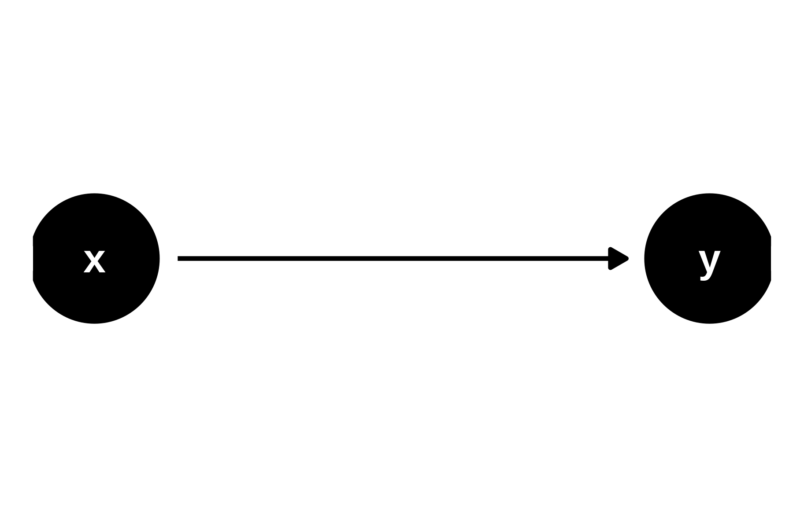
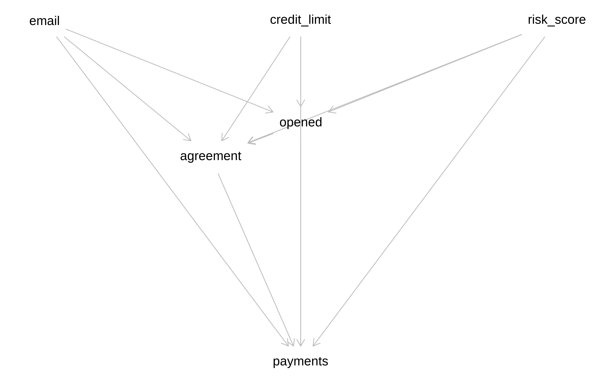
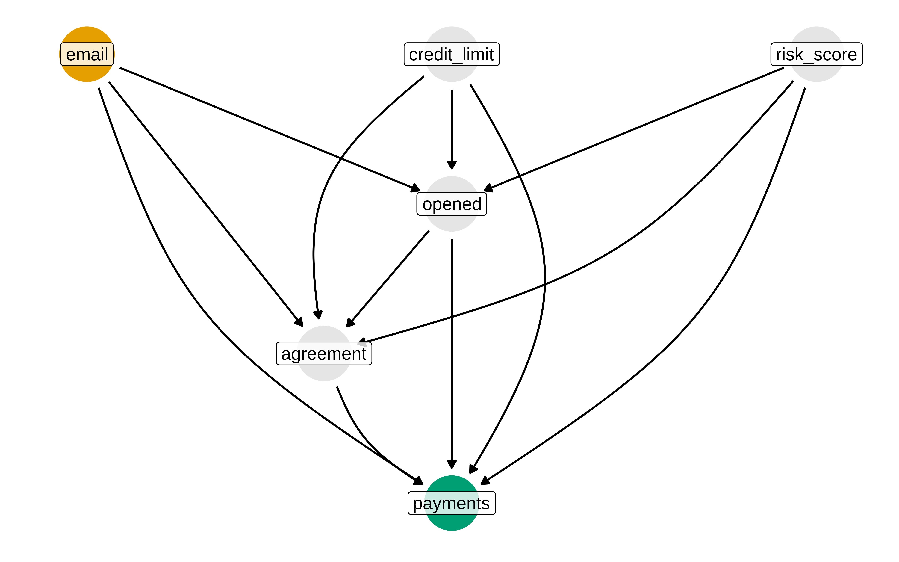
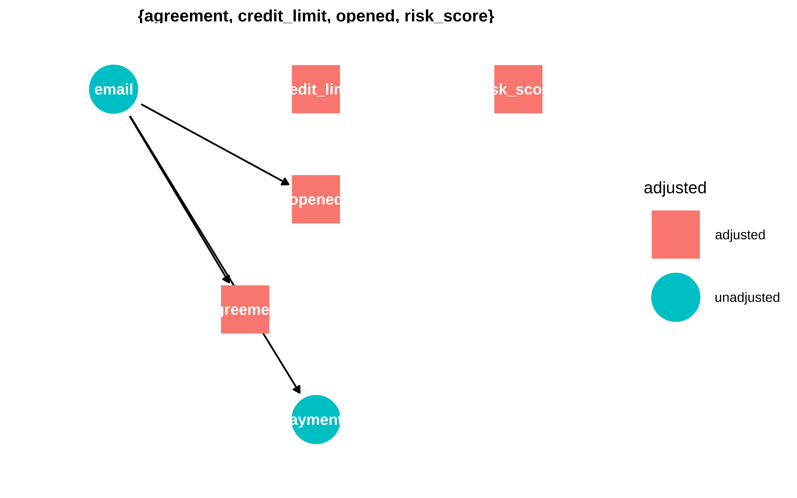
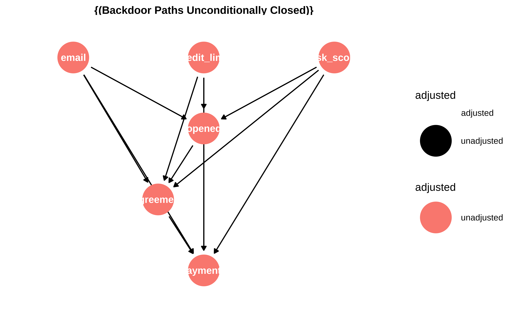

x causes y.
Casi todos los ejemplos están sacados de los capítulos 5 y 6 de https://www.r-causal.org/. Si están bien explicados no hace falta reinventar la rueda. En la medida de lo posible se ha utilizado webr para que se pueda ejecutar desde un navegador, sin necesidad de tener nada instalado y así jugar un poco.
Una forma de hacer explícitas las relaciones causales es simplemente dibujándolas
x causes y.
Los Dags nos ayudan a evitar y entender algunas paradojas como la de Simpson.
x e y están asociados aunque no hay flecha causal entre ellosx e y están relacionados sólo a través de qx e y no están relacionados.Los path que transmiten asociación se les llama open path Los que no transmiten asociación se les llama closed_path
Ahora bien, ¿deberiamos ajustar por q para estimar el efecto de x en y?
En el fork dibujado dónde suponemos que no hay asociación entre x e y pero si entre x y q y entre y y q, si se debería condicionar por q para obtener el efecto causal. Condicionar por q bloquea el camino y así se elimina ese sesgo.
q es una causa común del tratamiento y de la respuesta. Ejemplo, unos datos observacionales dónde se quiere estimar el efecto de un medicamento en la salud de los pacientes, y q es la gravedad actual de una enfermedad. Puede suceder que en esos datos sólo se le haya dado el medicamento nuevo a los pacientes graves, mientras a los menos graves se le da tratamiento convencional en teoría menos efectivo. Podríamos obtener que el efecto del medicamento es pernicioso. Para eso lo que se hace es controlar (estratificar o incluir en el modelo) la variable del grado de la enfermedad. En un estudio experimental aleatorizado, nos evitamos en gran parte este problema, puesto que la aleatoriedad nos garantiza que las variables de confusión , incluso las no observadas, se reparten de forma equitativa entre los grupos de tratamiento y control.
En el chain depende de qué efecto se quiera estimar. si se quiere estimar el efecto global de x sobre y entonces no se debe condicionar, porque parte del efecto es a través de q. Si se quiere estimar el efecto directo entonces si se ha de condicionar por q, para de esta forma descontar el efecto mediado por q
En un collider no se debe condicionar por q porque q es una consecuencia de x e y y condicionar por q bloquearía el camino de asociación entre x e y. Buscar ejemplo
Copiar código en la consola de webR
n = 1000
x <- rnorm(n)
###
### q
linear_pred <- 2 * x + rnorm(n)
prob <- 1 / (1 + exp(-linear_pred))
q <- rbinom(n, size = 1, prob = prob)
###
### y
y <- -4 * q + rnorm(n)
###
mediator_data <- tibble(x, y, q = as.factor(q))
p1 <- mediator_data |>
ggplot(aes(x, y)) +
geom_point(alpha = .2) +
geom_smooth(method = "lm", se = FALSE, color = "black") +
facet_wrap(~"not adjusting for `q`\n(total effect)")
p2 <- mediator_data |>
ggplot(aes(x, y, color = q)) +
geom_point(alpha = .2) +
geom_smooth(method = "lm", se = FALSE) +
facet_wrap(~"adjusting for `q`\n(direct effect)")
p1 + p2
### x
x <- rnorm(n)
###
### y
y <- rnorm(n)
###
### q
linear_pred <- 2 * x + 3 * y + rnorm(n)
prob <- 1 / (1 + exp(-linear_pred))
q <- rbinom(n, size = 1, prob = prob)
###
collider_data <- tibble(x, y, q = as.factor(q))
p1 <- collider_data |>
ggplot(aes(x, y)) +
geom_point(alpha = .2) +
geom_smooth(method = "lm", se = FALSE, color = "black") +
facet_wrap(~"not adjusting for `q`\n(unbiased)")
p2 <- collider_data |>
ggplot(aes(x, y, color = q)) +
geom_point(alpha = .2) +
geom_smooth(method = "lm", se = FALSE) +
facet_wrap(~"adjusting for `q`\n(biased)")
p1 + p2Estos ejemplos nos muestran que no sólo nos vale con tener los datos, sino que tenemos que tener asunciones sobre cómo se han generado, esas asunciones han de venir del conocimiento sobre el tema investigado, y una herramienta para hacerlas explícitas son los DAG’s.
Todos recordamos el famoso cuarteto de Anscombe.
O el más moderno (y divertido) datasauRus
Pero en inferencia causal la cosa se complica.
Causal Quartet,D’Agostino McGowan L, Barrett M (2023). Causal inference is not a statistical problem. Preprint arXiv:2304.02683v1.
library(ggdag)
coords <- list(
x = c(X = 1, Z = 3, Y = 2),
y = c(X = 1, Z = 1.1, Y = 1)
)
d_coll <- dagify(
Z ~ X + Y,
Y ~ X,
exposure = "X",
outcome = "Y",
labels = c(X = "e", Y = "o", Z = "c"),
coords = coords
)
coords <- list(
x = c(X = 2, Z = 1, Y = 3),
y = c(X = 1, Z = 1.1, Y = 1)
)
d_conf <- dagify(
X ~ Z,
Y ~ X + Z,
exposure = "X",
outcome = "Y",
labels = c(X = "e", Y = "o", Z = "c"),
coords = coords
)
coords <- list(
x = c(X = 1, Z = 2, Y = 3),
y = c(X = 1, Z = 1.1, Y = 1)
)
d_med <- dagify(
Z ~ X,
Y ~ Z,
exposure = "X",
outcome = "Y",
labels = c(X = "e", Y = "o", Z = "c"),
coords = coords
)
coords <- list(
x = c(u1 = 1, u2 = 2, X = 3, Z = 3, Y = 5),
y = c(u1 = 2, u2 = 4, X = 1, Z = 2, Y = 2)
)
d_mbias <- dagify(
Z ~ u1 + u2,
X ~ u1,
Y ~ X + u2,
exposure = "X",
outcome = "Y",
labels = c(X = "e", Y = "o", Z = "c"),
coords = coords
)
p_coll <- d_coll |>
tidy_dagitty() |>
mutate(covariate = ifelse(label == "c", "covariate", NA_character_)) |>
ggplot(
aes(x = x, y = y, xend = xend, yend = yend)
) +
geom_dag_point(aes(color = covariate)) +
geom_dag_edges(edge_color = "grey70") +
geom_dag_text(aes(label = label)) +
theme_dag() +
coord_cartesian(clip = "off") +
theme(legend.position = "bottom") +
ggtitle("(1) Collider") +
guides(color = guide_legend(
title = NULL,
keywidth = unit(1.4, "mm"),
override.aes = list(size = 3.4, shape = 15)
)) +
scale_color_discrete(breaks = "covariate", na.value = "grey70")
p_conf <- d_conf |>
tidy_dagitty() |>
mutate(covariate = ifelse(label == "c", "covariate", NA_character_)) |>
ggplot(
aes(x = x, y = y, xend = xend, yend = yend)
) +
geom_dag_point(aes(color = covariate)) +
geom_dag_edges(edge_color = "grey70") +
geom_dag_text(aes(label = label)) +
theme_dag() +
coord_cartesian(clip = "off") +
theme(legend.position = "bottom") +
ggtitle("(2) Confounder") +
guides(color = guide_legend(
title = NULL,
keywidth = unit(1.4, "mm"),
override.aes = list(size = 3.4, shape = 15)
)) +
scale_color_discrete(breaks = "covariate", na.value = "grey70")
p_med <- d_med |>
tidy_dagitty() |>
mutate(covariate = ifelse(label == "c", "covariate", NA_character_)) |>
ggplot(
aes(x = x, y = y, xend = xend, yend = yend)
) +
geom_dag_point(aes(color = covariate)) +
geom_dag_edges(edge_color = "grey70") +
geom_dag_text(aes(label = label)) +
theme_dag() +
coord_cartesian(clip = "off") +
theme(legend.position = "bottom") +
ggtitle("(3) Mediator") +
guides(color = guide_legend(
title = NULL,
keywidth = unit(1.4, "mm"),
override.aes = list(size = 3.4, shape = 15)
)) +
scale_color_discrete(breaks = "covariate", na.value = "grey70")
p_m_bias <- d_mbias |>
tidy_dagitty() |>
mutate(covariate = ifelse(label == "c", "covariate", NA_character_)) |>
ggplot(
aes(x = x, y = y, xend = xend, yend = yend)
) +
geom_dag_point(aes(color = covariate)) +
geom_dag_edges(edge_color = "grey70") +
geom_dag_text(aes(label = label)) +
geom_dag_text(
aes(label = name),
data = \(.df) filter(.df, name %in% c("u1", "u2"))
) +
theme_dag() +
coord_cartesian(clip = "off") +
ggtitle("(4) M-bias") +
theme(legend.position = "bottom") +
guides(color = guide_legend(
title = NULL,
keywidth = unit(1.4, "mm"),
override.aes = list(size = 3.4, shape = 15)
)) +
scale_color_discrete(breaks = "covariate", na.value = "grey70")
p_coll
p_conf
p_med
p_m_biascovariate (c) is a collider. We should not adjust for covariate, which is a descendant of exposure (e) and outcome (o).
covariate (c) is a confounder. covariate is a mutual cause of exposure (e) and outcome (o), representing a backdoor path, so we must adjust for it to get the right answer.
covariate (c) is a mediator. covariate is a descendant of exposure (e) and a cause of outcome (o). The path through covariate is the indirect path, and the path through exposure is the direct path. We should adjust for covariate if we want the direct effect, but not if we want the total effect.
covariate (c) is a collider via M-Bias. Although covariate happens before both outcome (o) and exposure (e), it’s still a collider. We should not adjust for covariate, particularly since we can’t control for the bias via u1 and u2, which are unmeasured.
| Data generating mechanism | Correct causal model | Correct causal effect |
|---|---|---|
| (1) Collider | outcome ~ exposure | 1 |
| (2) Confounder | outcome ~ exposure; covariate | 0.5 |
| (3) Mediator | Direct effect: outcome ~ exposure; covariate, Total Effect: outcome ~ exposure | Direct effect: 0, Total effect: 1 |
| (4) M-Bias | outcome ~ exposure | 1 |
Afortunadamente existen herramientas que nos permiten, dado un diagrama causal saber fácilmente sobre qué conjunto de variables hay que condicionar para obtener el efecto causal.
Lo díficil es tener el dag correcto.
Nota: Las librerías dagitty y ggdag no están en webr y no podemos ejecutarlas directamente desde el navegador
library(dagitty)
g <- dagitty('dag{
agreement [pos="1.300,2.000"]
credit_limit [pos="2.000,0.000"]
email [exposure,pos="0.000,0.000"]
opened [pos="2.000,1.500"]
payments [outcome,pos="2.000,5.000"]
risk_score [pos="4.000,0.000"]
agreement -> payments
credit_limit -> agreement
credit_limit -> opened
credit_limit -> payments
email -> agreement
email -> opened
email -> payments
opened -> agreement
opened -> payments
risk_score -> agreement
risk_score -> opened
risk_score -> payments
}')
plot(g)
O usar ggdag
library(ggdag)
library(ggokabeito)
email_dag_full <- dagify(
payments ~ email + agreement + opened + credit_limit + risk_score,
agreement ~ email + opened + credit_limit + risk_score,
opened ~ email + credit_limit + risk_score,
exposure = "email",
outcome = "payments",
labels = c(
payments = "payments",
email = "Envio mail",
agreement = "agreement",
opened = "opened",
credit_limit = "credit_limit",
risk_score = "risk_score"
)
,
coords = list(
x = c(
payments = 2,
email = 0,
credit_limit = 2,
risk_score = 4,
opened = 2,
agreement = 1.3
),
y = c(
payments = 0,
email = 3,
credit_limit = 3,
risk_score = 3,
opened = 2,
agreement = 1
))
)
curvatures = c(-0.2,-0.3, 0, 0.3, 0, 0,
-0.2, 0, 0, 0.2, 0, 0.2)
email_dag_full |>
tidy_dagitty() |>
node_status() |>
ggplot(
aes(x, y, xend = xend, yend = yend, color = status)
) +
geom_dag_edges_arc(curvature = curvatures) +
geom_dag_point() +
geom_dag_label(colour= "black", size = 4, alpha = 0.8) +
scale_color_okabe_ito(na.value = "grey90") +
theme_dag() +
theme(legend.position = "none") +
coord_cartesian(clip = "off")
Al especificar cuál es el tratamiento y cuál la respuesta podemos preguntarle al dag por qué variables hay que ajustar.
dagitty::adjustmentSets(g, exposure = "email", outcome = "payments", effect = "total")#> {}dagitty::adjustmentSets(g, exposure = "email", outcome = "payments", effect = "direct")#> { agreement, credit_limit, opened, risk_score }O usando ggdag
ggdag_adjustment_set(email_dag_full, effect = "direct") + theme_dag()
ggdag_adjustment_set(email_dag_full, effect = "total") + theme_dag()